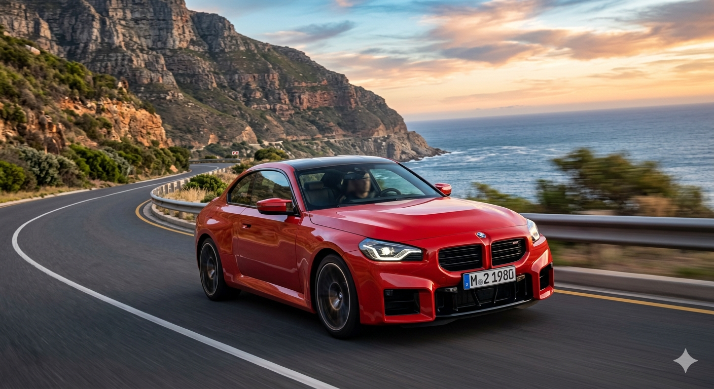
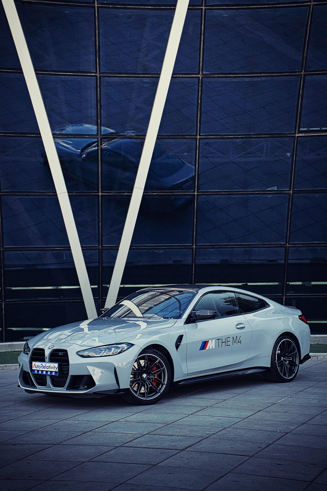
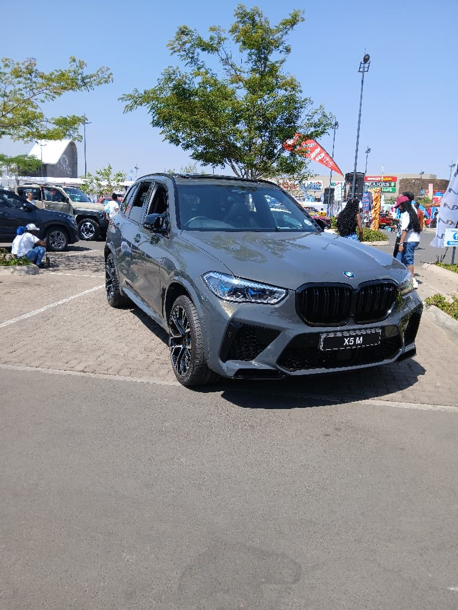

BMW M ICE vehicles use combustion engines to deliver raw power instead of electric motors, they rely solely on turbochargers for extra power. Models they are made for driver feel with models such as the M2 offer a manual transmission with a highly recognizable sound note made for petroheads.
G87 BMW M2

It is considered the baby M in the BMW M division,although its considered the smallest it shares the same engine with the BMW M4 but is slightly down on power.It puts out a total of 473hp as of late with earlier models putting out 453hp. It has 600Nm of torque. Unlike the M4 or M3 it has a manual transmission option.
G82 BMW M4

high performance luxury coupe,that features a 3.0 inline-6 called the S58B30T0. Power ranges from 480hp(standard) to 503hp in the older Competition models while in the facelift LCI models it is 523hp. The Standard model torque is 550Nm while the Competition model pushes out a whopping 650Nm.
F95 BMW X5 M

The BMW X5M is a performance SUV from the BMW brand, it houses the S68B44T0 in later models while early models had the S63B44T4. It has 600hp standard while Competition models have 617hp. Both have 750Nm of torque. The mighty X5M does 0-100kmh in 3.8seconds which is more than enough for a vehicle of that weighs alot(2,475Kg).